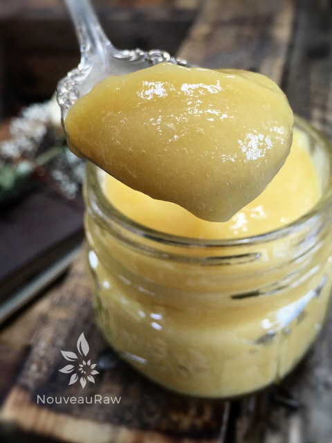

Banana Mango Pudding
Banana Mango Pudding

~ raw, vegan, gluten-free, nut-free ~
This Banana Mango Pudding is yummy-licious! It is excellent as a pudding, enjoyed as a dessert, a mid-afternoon snack or even for breakfast. And to top that off, it is so easy to make.
Mango’s are a magical fruit.
After peeling your mango and removing the seed, put the mango in a blender and watch it transform into an amazing pudding consistency!
You could be as creative as you wanted with this. Try adding vanilla extract, cinnamon, fresh berries, sprinkle chia or flax seeds on it, or nuts. You can really pack a lot of nutrients and goodness in this recipe.
Be sure to start off with a juicy ripe mango. Remember, if you start off with poor quality ingredients… you will end up with much disappointment with the end result. Please read below on how to select the best mangos and bananas. I hope you enjoy this simple recipe. Sending you kitchen blending blessings, amie sue
Ingredients:
- 1 large mango, ripe
- 2 medium bananas, ripe (they should have brown spots on the banana)
Preparation:
- Combine the mango and bananas in the blender and process until nice and creamy.
- Eat right away or chill. The texture will thicken as it chills.

How to select a ripe Mango
- Look for mangoes that are football shaped rather than thin or flat. The flatter mangoes may be stringy. Avoid stringy looking, shriveled mangoes. The mangoes that are fuller and rounder usually have the deep color of a ripe peach instead of the yellowish-green that the other varieties have.
- Avoid mangos with a sour or alcoholic smell. Because of their high sugar content, mangoes will ferment naturally.
- Most mangoes when you buy them in the store are hard. They must be fully ripened before eating. Leave at cool room temperature till the flesh is yielding but not mushy. Peel color does not indicate ripeness, but most varieties will turn yellow as they ripen (except the Keitt and Kent, which can be ripe while they are still green).
- Check the area around the stem; if it looks plump and round, the mango is ripe. With the stem end up, smell the mango. A ripe mango will have a sweet, fruity aroma and be slightly soft to the touch, like an avocado or peach. A few brown speckles is also a normal indication of ripeness. Once you’ve ripened the mango, you can refrigerate it for up to 4 days.
How to select ripe bananas
- Bananas are usually harvested when green. In stores, you can usually find a range of colors from green to yellow, with brown spots. Your choice should be based on when you want to eat the banana: greener ones last more days, while yellow and brown-spotted bananas should be eaten in a few days.
- Bananas should be quite firm, bright, and the peel should not be crushed or cut. Their stems and tips should be intact. The size of the banana does not affect its quality, so just choose the size that fits you best
- Bananas are very fragile and should be stored in a place when they will be protected. They should be stored at room temperature to allow for the ripening process to complete. Do not store them in the refrigerator when they are green, or this will irreversibly interrupt the ripening process (and it will not revert even if they are kept at room temperature afterward).
- If you need to speed up the ripening process, you can place the banana in a paper wrap with an apple. While you should not keep green bananas in the fridge, it is actually a good idea to store ripe bananas there. Their peel will become progressively brown, but the pulp will not be affected. To improve the flavor, it is best to keep bananas at room temperature for a while
- If you wish to store bananas for a long time (up to 2 months), it is possible to freeze them. To do this, simply remove the peel and sprinkle some lemon juice over the pulp to prevent discoloration; then wrap them in plastic
- I always try to keep frozen bananas in the freezer for smoothies and banana ice cream!
© AmieSue.com